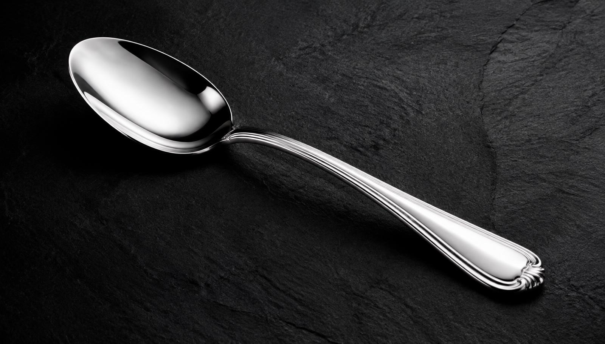
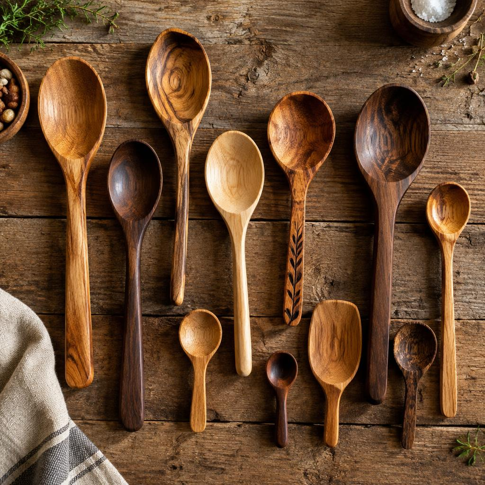
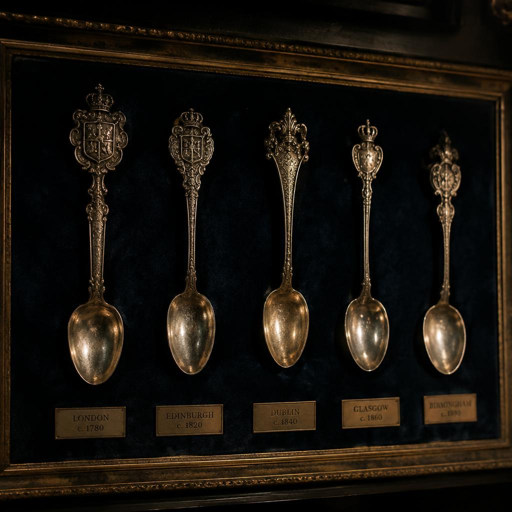
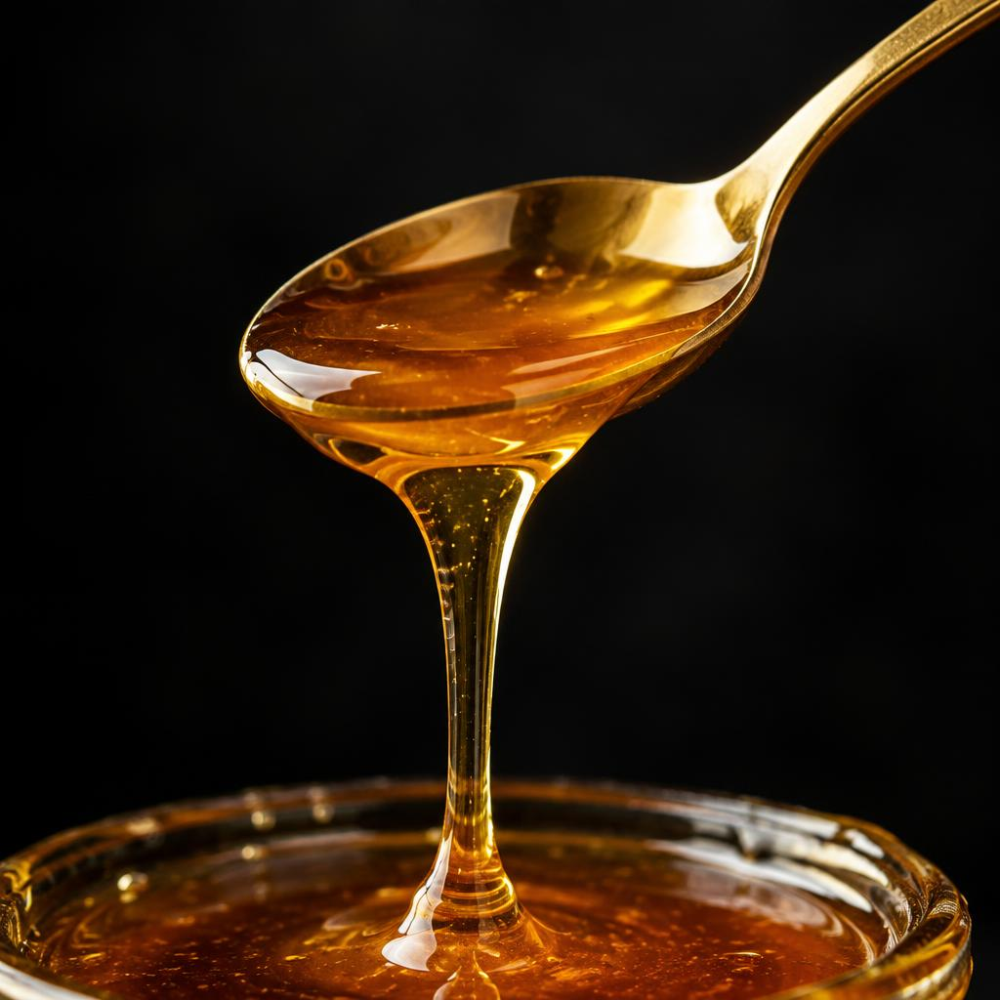

Oddiy narsa — buyuk tarix
Har bir taomning eng sodiq hamrohi. Ming yillik tarix, cheksiz shakllar va nafis dizayn.

Qoshiq haqida
Eng birinchi qoshiqlar yog'och, suyak va chig'anoqlardan yasalgan. Bugun ham usta qo'llari yog'ochdan iliq, tabiiy va har biri o'ziga xos qoshiqlar yaratadi.
yillik tarix
xil turi
davlatda ishlatiladi
mln dona / yil
Tarix

Fil suyagi va yog'ochdan bezakli qoshiqlar yasalgan.
Bronza va kumush qoshiqlar zodagonlar ramziga aylandi.
Gerbli kumush qoshiqlar oilaviy meros sifatida saqlangan.
Qoshiq har bir xonadonga arzon va mustahkam bo'lib kirdi.
Turlari
Sho'rva va suyuq taomlar uchun klassik kumush qoshiq.
Qozon va idishlarni tirnamaydi, oshxonaning eng yaxshi do'sti.

Asal va shirinliklar uchun nafis, yaltiroq tanlov.
Gerbli, o'yma naqshli kolleksiya qoshiqlari.
Shirin hayot bir qoshiq asaldan boshlanadi.
Galereya
Qiziqarli faktlar
"Spoon" so'zi qadimgi ingliz tilida "yog'och bo'lagi" degan ma'noni bildiradi.
Qo'lda yuving, darhol quriting va oyda bir marta o'simlik moyi surting.
Havodagi oltingugurt bilan reaksiyaga kirishadi. Soda va issiq suv bilan tozalanadi.
Dunyodagi eng katta yog'och qoshiq uzunligi 9 metrdan oshadi.
Aloqa